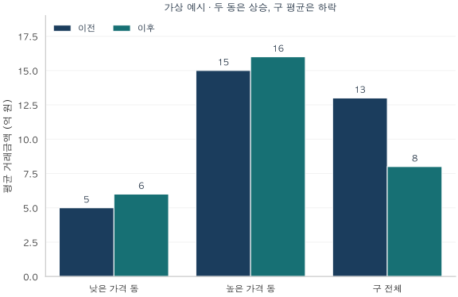
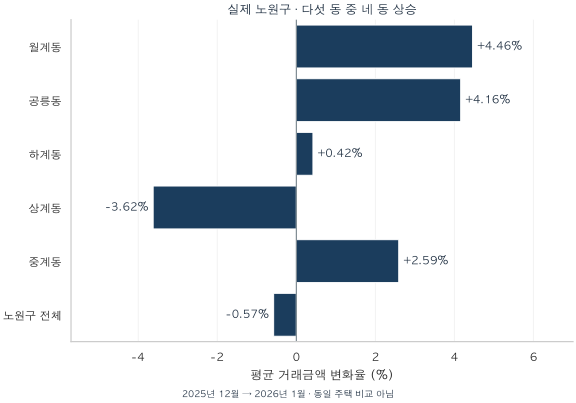
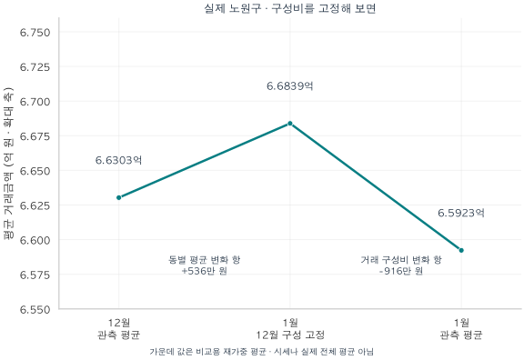

서울 아파트 · 실거래 데이터 노트
모든 동네가 올랐는데, 우리 구는 내렸다?
가상의 심슨 역설과 실제 노원구 거래로 평균가격의 변화를 분해합니다. 거래 구성·선택 편향·표준화를 이해하고 집값 상승과 하락을 읽는 다섯 질문을 정리합니다.
분석 기간 · 2025년 12월·2026년 1월 노원구 계약 · 별도 가상 예시 | 보유 자료 스냅샷 생성 · 2026-10-04
동네마다 평균 거래금액이 올랐는데, 구 전체 평균은 내려갈 수 있을까요? 가능합니다. 구 평균에는 ‘각 동에서 얼마에 거래됐는가’뿐 아니라 ‘어느 동에서 더 많이 거래됐는가’도 들어 있기 때문입니다.
앞선 글에서는 서울의 거래가 어느 지역과 가격대로 이동했는지 살펴봤습니다. 이번에는 그 이동이 평균가격을 어떻게 바꾸는지 한 걸음 더 들어가 봅니다. 먼저 두 동만 있는 가상의 구로 원리를 익힌 다음, 노원구의 실제 거래에서 평균을 분해해 보겠습니다. 마지막에는 ‘집값이 올랐다’는 문장을 읽을 때 사용할 확인표를 남깁니다.
두 동이 모두 1억 원 올라도 구 평균은 5억 원 내린다
아파트가 상대적으로 저렴한 동과 비싼 동, 두 법정동으로 이루어진 구를 가정해 보겠습니다. 법정동은 주소에 쓰는 동 단위입니다. 아래 수치는 계산 원리를 보여주기 위해 만든 가상 예시이며 실제 서울의 특정 지역을 가리키지 않습니다.
| 법정동 | 이전 평균 | 이전 거래 | 이후 평균 | 이후 거래 |
|---|---|---|---|---|
| 낮은 가격 동 | 5 | 20건 · 20% | 6 | 80건 · 80% |
| 높은 가격 동 | 15 | 80건 · 80% | 16 | 20건 · 20% |
| 구 전체 | 13 | 100건 | 8 | 100건 |
이전 구 평균은 5억×20% + 15억×80% = 13억 원입니다. 이후에는 6억×80% + 16억×20% = 8억 원이 됩니다. 두 동의 평균은 각각 1억 원씩 올랐지만, 상대적으로 저렴한 동의 거래가 대부분을 차지하면서 구 평균은 5억 원 낮아졌습니다.

이처럼 하위 집단에서 보인 방향이 집단을 합치면 반대로 나타나는 현상을 심슨의 역설이라고 부릅니다. 계산이 틀려서 생기는 일이 아닙니다. 두 시점의 전체 평균이 서로 다른 구성의 거래를 비교하고 있는 것입니다.
거래 비중을 이전의 20%·80%로 고정하면 이후 평균은 6억×20% + 16억×80% = 14억 원입니다. 13억→14억은 동별 평균이 바뀐 결과이고, 14억→8억은 거래 비중이 바뀐 결과입니다. 다만 14억은 비교를 위해 다시 계산한 값이지 실제 이후 거래의 전체 평균은 아닙니다.
실제 노원구: 다섯 동 중 네 동이 올라도 전체 평균은 하락
실제 거래에서는 이 원리가 어떻게 드러날까요? 2025년 12월과 2026년 1월 노원구 아파트 계약을 비교했습니다. 분석 기준에 맞는 거래는 각각 453건과 510건입니다. 전용면적 전체를 포함하며, 식별된 해제·직거래와 토지임대부 등을 제외한 집계입니다.
월계·공릉·하계·중계동의 평균 거래금액은 올랐고 상계동은 내렸습니다. 노원구 전체 평균은 약 6억 6,303만 원에서 6억 5,923만 원으로 0.57% 하락했습니다. 모든 동이 오른 가상 예시와는 구별해야 하지만, 다수 동의 방향을 세어 보는 것만으로 구 평균을 설명할 수 없다는 점은 같습니다.

| 법정동 | 2025.12 건수·비중 | 평균 | 2026.1 건수·비중 | 평균 | 평균 변화율 |
|---|---|---|---|---|---|
| 월계동 | 67건14.8% | 7.170 | 69건13.5% | 7.490 | +4.46% |
| 공릉동 | 69건15.2% | 6.068 | 81건15.9% | 6.320 | +4.16% |
| 하계동 | 41건9.1% | 6.943 | 50건9.8% | 6.973 | +0.42% |
| 상계동 | 169건37.3% | 5.993 | 211건41.4% | 5.776 | -3.62% |
| 중계동 | 107건23.6% | 7.542 | 99건19.4% | 7.737 | +2.59% |
| 노원구 전체 | 453건100% | 6.630 | 510건100% | 6.592 | -0.57% |
변화의 연결고리는 거래에서 차지한 몫입니다. 평균금액이 상대적으로 낮은 상계동 비중은 37.3%에서 41.4%로 커졌습니다. 반대로 평균금액이 높은 중계동 비중은 23.6%에서 19.4%로 줄었습니다. 동별 평균의 변화와 함께 이 이동도 구 평균에 반영됩니다.
12월 구성으로 1월을 다시 계산하면, 평균의 방향이 바뀐다
이번에는 1월의 각 동 평균에 12월 거래 비중을 곱해 합칩니다. ‘1월에도 동별 거래 비중이 12월과 같았다면?’이라는 비교용 계산입니다.

| 계산 | 평균금액 | 앞 단계와의 차이 |
|---|---|---|
| 12월 관측 평균 | 66,303 | — |
| 1월 평균 · 12월 동별 비중 고정 | 66,839 | +536 |
| 1월 관측 평균 | 65,923 | -916 |
동별 평균 변화 항은 약 +536만 원이지만, 거래 구성비 변화 항은 약 −916만 원입니다. 둘을 합치면 관측 평균의 변화인 약 −380만 원이 됩니다. 이 순서의 계산에서는 구성비 변화 항이 동별 평균 변화 항을 상쇄하고도 남았습니다.
이것은 평균 변화의 산술적 분해입니다. 거래 이동의 원인이나 정책 효과를 추정한 것은 아닙니다. 기준 비중을 1월로 잡는 등 분해 순서를 달리하면 두 항에 배분되는 금액도 달라집니다. 이 글에서는 이해하기 쉽도록 12월 비중을 기준으로 삼았습니다.
동까지 맞췄는데도 ‘같은 집의 변화’는 아직 남는다
법정동은 같은 특성의 집들이 모인 하나의 상품이 아닙니다. 한 동 안에서도 소형·대형, 신축·구축, 역세권·비역세권, 단지와 층수가 다릅니다. 매달 거래되는 집이 바뀌면 동 평균 자체에도 구성 변화가 섞입니다.
실제로 상계동에서 거래된 아파트의 평균 전용면적은 61.39㎡에서 58.50㎡로 줄었습니다. 월계동은 63.11㎡에서 66.23㎡로 늘었습니다. 이 차이만으로 평균금액 변화의 원인을 확정할 수는 없지만, ‘동이 같으니 비교 대상도 같다’고 가정하기 어렵다는 근거는 됩니다. 앞서 계산한 +536만 원에도 이런 동 내부의 변화가 포함될 수 있습니다.
여기서 선택 편향을 함께 생각해야 합니다. 실거래 자료에 들어오는 집은 그 기간에 실제 계약이 성사된 집입니다. 거래되지 않은 집은 빠집니다. 집의 특성이나 매도·매수 여건에 따라 거래될 가능성이 다르다면, 거래된 집의 평균을 모든 집의 가격으로 일반화할 때 편향이 생길 수 있습니다. 심슨의 역설은 집계를 합칠 때의 방향 역전이고, 선택 편향은 관측된 표본을 더 넓은 대상에 적용할 때의 문제입니다. 둘이 항상 동시에 생기는 것은 아닙니다.
| 계약 월 | 거래 수 | 중앙값 | 가운데 50% 금액 범위 | 평균 전용면적(㎡) |
|---|---|---|---|---|
| 2025-12 | 453 | 6.00 | 5.15~8.10 | 65.12 |
| 2026-01 | 510 | 6.00 | 5.10~7.80 | 63.92 |
노원구 거래금액의 중앙값은 두 달 모두 6억 원이었습니다. 평균은 낮아졌어도 중앙값은 같았습니다. 위 범위는 거래금액의 25~75백분위수로, 가격 추정의 신뢰구간이 아닙니다. 두 달의 평균 차이가 통계적으로 유의한 시세 변화인지도 이 집계만으로 판단하지 않았습니다.
표본을 동·단지·면적으로 좁힐수록 조건은 가까워지지만 거래는 적어집니다. 거래 수와 서로 다른 단지 수, 가격 분포, 마지막 계약 시점, 미관측 비율을 함께 봐야 합니다. 추정치를 제시한다면 불확실성 구간과 산출 방법도 밝혀야 합니다. 같은 단지의 거래는 서로 닮아 있으므로 단순히 거래 건수만 많다고 독립적인 근거가 충분한 것도 아닙니다. 거래가 없는 집들이 빠지는 문제는 오차막대 하나로 해결되지 않습니다.
앞선 서울 분석의 결론도 여기까지는 말하지 못했다
앞선 지역별 거래 글은 2025년 2분기 서울 거래가 늘었지만 강남3구 거래는 줄었다고 설명했습니다. 이는 거래의 지리적 구성이 바뀌었다는 근거입니다. 그 사실만으로 강남3구의 집값이 내려갔다거나 다른 권역의 집값이 올랐다고 결론 내릴 수는 없습니다.
25억 초과 거래 비중 글에서 읽은 고가 구간의 비중도 마찬가지입니다. 비중은 고가 거래 자체와 다른 가격대 거래에 함께 좌우됩니다. 또 가격대는 고정된 주택 집단이 아닙니다. 같은 조건의 집도 25억 원 경계를 넘나들 수 있어, 고가 구간의 몫이 커졌다는 사실만으로 원래 고가였던 집의 상승률을 알 수는 없습니다.
거래금액 글에서는 2026년 1분기의 고가 거래금액 감소를 확인했습니다. 그것은 해당 기간 체결된 계약금액의 합계에 관한 결론입니다. 거래되지 않은 집까지 포함한 서울의 주택자산 가치가 그만큼 줄었다는 뜻은 아닙니다. 앞선 글들의 관찰은 유효하지만, 집값의 상승·하락까지 답하려면 비교 대상을 한 단계 더 맞춰야 합니다.
‘아파트 가격’이라는 말부터 구체적으로 바꾸기
| 지표 | 답하는 질문 | 함께 정할 기준 |
|---|---|---|
| 기간 평균 거래금액 | 이때 거래된 한 채는 평균 얼마였나? | 계약 기간·포함 거래·동과 면적의 구성비 |
| 전용면적 기준 평당가 | 거래된 집의 전용 1평당 금액은 얼마인가? | 거래별 평당가의 평균인지, 금액 합계÷면적 합계인지 |
| 국민평형 가격 | 비슷한 크기의 주택은 어떻게 변했나? | 예: 전용 84~85㎡라는 정확한 범위와 단지·연식·층 조건 |
| 표준주택 추정가격·가격지수 | 비교 조건을 맞춘 가격 수준·변화는 어떠한가? | 고정 특성·기준 시점·가중치·모형·불확실성·미관측 범위 |
| 지역의 추정 주택자산 총액 | 거래 여부와 무관하게 보유 주택 전체의 추정 가치는 얼마인가? | 주택 유형별 추정가격×세대수, 누락 주택, 신축·멸실 변화 |
이 프로젝트의 실거래 평당가는 거래금액÷(전용면적÷3.3058)로 계산합니다. 공급면적 기준 평당가와는 다릅니다. 면적으로 나누면 크기 차이를 일부 살펴볼 수 있지만, 입지·연식·층·단지의 차이가 모두 사라지지는 않습니다. ‘평균 평당가’에서도 각 거래를 같은 비중으로 볼지, 면적이 큰 거래에 더 큰 비중을 줄지 명시해야 합니다.
국민평형도 정확한 면적 범위를 먼저 써야 합니다. 전용 85㎡ 이하 전체를 묶으면 작은 집까지 섞입니다. 가격 변화를 비교하려면 양 시점에 같은 단지·면적·연식·층 기준과 같은 구성비를 적용하고, 비교할 수 없는 표본의 비율을 함께 밝혀야 합니다. 이 과정에서 빠진 집들이 많으면 결과의 적용 범위도 좁아집니다.
한국부동산원의 공동주택 실거래가격지수는 단순 평균과 달리 반복매매모형을 사용하며, 거래쌍을 확보하기 위한 동일주택 가정을 둡니다. 공식 설명도 거래량이 적은 시기·지역의 지수 불안정을 유의점으로 안내합니다. 표준화는 비교를 개선하는 방법이며, 모든 불확실성을 없애는 보장은 아닙니다. 한국부동산원 지수 작성 방법
지역 전체 세대의 가격을 합한 주택자산 총액은 또 다른 질문입니다. 가격이 그대로여도 신축 입주로 세대수가 늘면 총액은 커질 수 있습니다. 따라서 ‘거래금액 합계’, ‘고정된 주택들의 가격 변화’, ‘현재 주택 재고의 총가치’를 구분해서 읽어야 합니다.
상승·하락 기사 한 줄을 다섯 칸으로 바꿔 보세요
관심 구의 집값이 올랐다는 기사를 만나면, 결론을 내리기 전에 아래 다섯 칸을 채워 보세요. 확인할 수 없는 항목은 그대로 ‘미확인’이라고 적어도 좋습니다.
- 무엇이 변했나? 거래된 한 채의 평균·중앙값, 평당가, 표준주택 추정가격, 지수, 자산 총액 중 무엇인가?
- 누구를 언제 비교했나? 같은 지역·단지·전용면적·연식·층 조건인가? 계약 기간과 자료 기준일은 같은가?
- 거래 구성은 달라졌나? 동별·면적별·단지별 건수와 비중은 어떠한가? 같은 비중으로 다시 계산해도 방향이 유지되는가?
- 근거는 얼마나 두꺼운가? 거래 수·단지 수·분포·최근성·미관측 비율은 공개됐는가? 추정치라면 불확실성은 어떻게 계산했는가?
- 어디까지 말할 수 있나? 거래 표본의 특징인가, 같은 조건의 집값 변화인가? 내 집이나 지역 전체로 넓힐 근거가 있는가?
“___ 지역의 ___ 기간, ___건에서 계산한 ___ 지표가 ___% 변했다. 비교 조건과 구성비는 ___까지 맞췄고, ___는 아직 확인하지 못했다.”
이번 노원구 사례라면 “전체 면적의 거래 평균이 0.57% 낮아졌지만, 12월 동별 비중을 고정한 평균은 높아졌다. 동 안의 주택 특성은 통제하지 않아 동일 주택의 하락 여부는 확인하지 못했다”라고 쓸 수 있습니다. 숫자를 덜 믿자는 이야기가 아닙니다. 그 숫자가 답하는 질문을 정확히 정하자는 이야기입니다.
사례 선택·계산식·출처와 집계 내려받기
실제 사례와 가상 예시의 구분
두 법정동의 5·15억→6·16억 예시는 교육용 가상 수치입니다. 실제 사례는 국토교통부 아파트 매매 실거래가 상세 자료의 노원구 2025년 12월·2026년 1월 계약입니다. 전용면적 전체, 병합 후 식별된 해제·직거래·토지임대부 및 정제상 부적격 관측 제외 기준을 적용했습니다. 법정동 코드는 단지 마스터를 기준으로 묶고 명칭과 대조했습니다.
실제 사례는 설명 목적의 사후 탐색으로 선택했습니다. 2025년 1월~2026년 3월 서울 25개 구의 인접 월 350쌍과 인접 분기 100쌍을 검토했습니다. 두 시점의 관측 법정동 집합이 같고 모든 동의 각 시점 거래가 10건 이상인 비교는 각각 51쌍과 32쌍이었습니다. 이 범위에서 모든 동 평균이 상승하면서 구 평균이 하락한 사례는 없었습니다. 이는 그런 현상이 서울에서 발생하지 않는다는 뜻이 아니며, 거래가 없는 법정동의 평균도 관측할 수 없습니다. 노원구는 다섯 동 중 네 동 상승 사례로 제시했습니다.
자료 시점과 검증
2026년 9월 계약분까지 보유한 자료의 2026년 10월 4일 생성 스냅샷입니다. 당시 정보 입수 시점은 복원하지 못했으며 후속 신고·정정·해제로 과거 수치가 달라질 수 있습니다. 노원구 동×월 10개 셀과 구 전체×월 2개 셀의 건수·금액 합계·평균면적·중앙값·분위수를 조회용 관측과 별도의 정제 거래 집계로 대조했습니다. 동별 셀은 41~211건이며 개별 거래나 단지 식별자는 공개하지 않습니다.
재가중과 분해식
각 동의 거래 비중을 w, 평균금액을 m이라 하면 구 평균은 Σ(w×m)입니다. 전체 변화는 Σ[w₁₂월×(m₁월−m₁₂월)] + Σ[(w₁월−w₁₂월)×m₁월]입니다. 가운데 비교용 평균은 Σ(w₁₂월×m₁월)입니다. 기준 가중치와 계산 순서를 명시한 산술 분해이며 순수 가격 효과나 인과효과가 아닙니다. 표는 반올림했지만 변화율·분해는 반올림 전 값으로 계산했습니다.
가운데 50% 범위는 선형 보간한 25·75백분위수입니다. 시세 신뢰구간·가설검정·계절 조정은 산출하지 않았습니다. 평당가·국민평형·표준주택·자산 총액은 비교 지표의 설명이며 이 글에서 새로 추정한 결과가 아닙니다.
이번 글의 실제 집계와 별도 가상 입력 내려받기 (JSON) · 앞선 서울 세 글의 집계 (JSON)
분석·집필: 파파펭귄 (Nobot Kang). 에이전트를 활용해 집계 대조·계산 검증·초안·seaborn 그림을 작성했습니다.